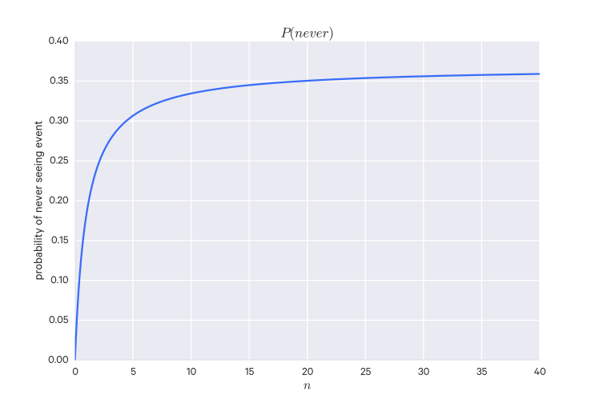

Things that have been edited out but may still be useful elsewhere
Decision Theory
Decision theory is a framework for which the general goal is to minimize expected loss. In machine learning, minimizing loss is the typical optimization problem.
Given labeled data points $(x_1, y_1), \dots, (x_n, y_n)$ and some loss function$L(y, \hat y)$, in which $y$ is the true label and $\hat y$ is the predicted label, we want to choose some function $f(x) = \hat y$ (i.e. yields a predicted label or value for a given $x$) that minimizes $L(y, f(x))$.
But because we don't know $x$ or $y$ we want to minimize the average loss, that is, the expected loss:
$$
\hat y = \argmin_y E[L(Y, \hat y) | X = x] = \argmax_y P(y|x)
$$
That is, choose $\hat y$ to minimize the expected loss, which is the same as the $y$ which is maximally probably given $x$.
An example loss function is the square loss, which is used in regression:
$$
L(y, \hat y) = (y - \hat y)^2
$$
The Cauchy-Schwarz Inequality
For two non-zero vectors, $\vec{x}, \vec{y} \in \mathbb R^n$, the following are true:
The absolute value of their dot product is less than or equal to the product of their
lengths: $|\vec{x} \cdot \vec{y}| \le ||\vec{x}|| \times ||\vec{y}||$
The absolute value of their dot product will be equal to the product of their lengths
only if they are collinear (i.e. if $\vec{x} = c\vec{y}$): $|\vec{x} \cdot \vec{y}| = ||\vec{x}|| \times ||\vec{y}||$
Intuition of dot products
The dot product between two vectors tells you how much in the same direction they're
going. So it is minimized when they are orthogonal, and maximized when they are
collinear.
Intuition of cross products
Cross products are kind of the opposite of dot products - the cross product is minimized
when the vectors are collinear and maximized when they are orthogonal.
where $\theta$ is the angle between $\vec{a}, \vec{b}$.
How likely is something to happen?
If something has a 1-in-$m$ chance of happening, does its likelihood increase the more trials there are? That is, how likely is it happen to at least once over $n$ trials?
You certainly aren't guaranteed that it will happen in $m$ trials, although the phrase "1-in-$m$" makes it sound that way. Think about flipping a coin - there is a 1-in-2 chance it will be heads, but you have seen that it is possible to get two heads in a row or two tails in a row.
A better question to ask is "How likely is this to never happen"? Then we can calculate $P(\text{never})$ and calculate $P(\text{atLeastOnce}) = 1 - P(\text{never})$.
With the coin example, let's say we want to know how likely a heads flip will be. $P(\text{heads}) = 1/2$ so $P(\text{heads}') = 1 - P(\text{heads})$ ^[Note that $P(X')$ is the probability of $X$not happening, also denoted $P(\bar X)$.].
So say we have two trials ($n = 2$). What is the probability that we never get a heads? It's just:
$$ (1 - 1/2)(1 - 1/2) = (1 - 1/2)^2 = 0.25 $$
We can generalize this to:
$$ P(\text{never}) = (1 - \frac{1}{m})^n $$
As $n$ grows larger, $P(never)$ grows smaller - but it never becomes 0. In fact, it approaches 0.37^[This happens to be $1/e$ (one over Euler's number).] as depicted in the accompanying figure.
$P(\text{never})$
So the probability of the event happening at least once in these 1-in-$m$ scenarios is around 0.63.